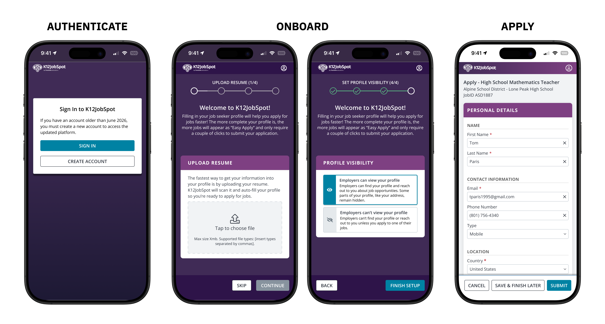
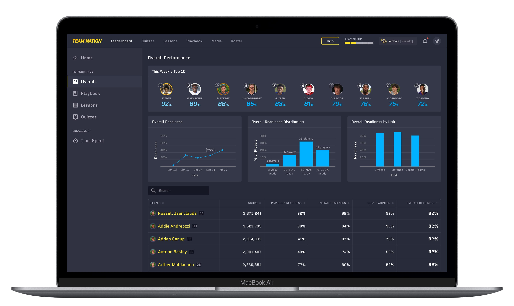

Work
Client and studio projects — product design, front-end builds, and the occasional full rebuild. Five case studies below; more available on request.

I cut job application time by 60% on average by questioning assumptions about the application process.

Saving HR directors hours by streamlining the process of setting up interviews with job seekers.

Rebuilt a broken migration flow under a two-day deadline, raising completion from 47% to 96%.

Built a 336-component design system, then pushed adoption despite a lack of resources.

Diagnosed a drop in engagement as a motivation problem, not a scoring bug, and tripled select user engagement.